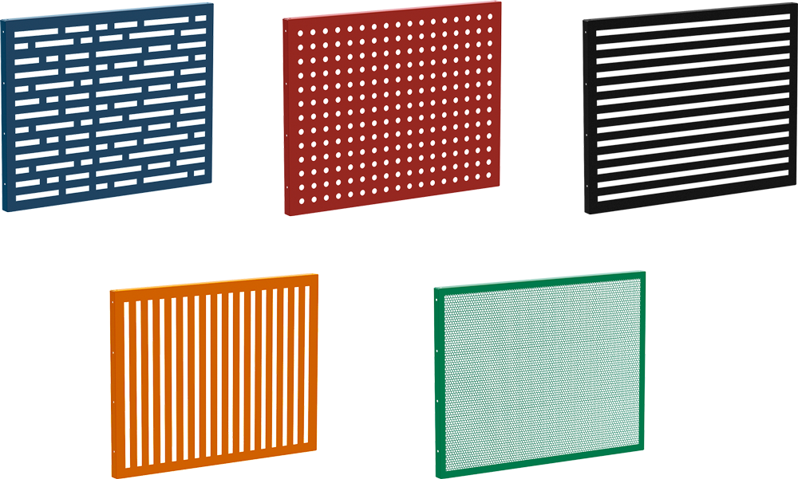

Главная
Корзины для внешних блоков
Корзины для внешних блоков кондиционеров
Наружный блок кондиционера – сложное устройство с внешними коммуникациями, которое выглядит не всегда эстетично. Если в проекте здания не учтено специального меcта для размещения, возникают трудности. Эту проблему решают корзины TITARK-K для наружных блоков кондиционеров.
Многообразие декора экранов позволяет не только скрыть кондиционеры, но и лаконично вписать корзины в архитектурную концепцию. А сборно-разборная конструкция корзины для кондиционеров TITARK-K обеспечивает свободный доступ для подвода коммуникаций при монтаже и облегчает обслуживание.
Конструктивно стандартная разновидность корзины для внешних блоков кондиционеров представлена прочным стальным коробом. Для каркаса используются сталь толщиной не менее 1 мм, а заполнение секций подбирается для заказчика исходя из запроса. Разнообразие вариаций оформления исключает при этом определенные сложности, например такие как несоответствие архитектурному стилю или разрозненность используемых материалов.
Лицевая и боковые панели изготавливаются в виде сетки, решетки, ламелей или секций с перфорированием. По внешнему оформлению декоративная решетка для наружного блока кондиционера может иметь разный дизайн. Причем дело не ограничивается однотонным окрашиванием лакокрасочным порошково-полимерным покрытие по каталогу RAL. Возможно комбинирование с вариативным сочетанием цветовой гаммы. Важно учесть оформление самого фасада и архитектурные особенности конкретного объекта.
Ниже представлены основные виды декоративных экранов TITARK:
